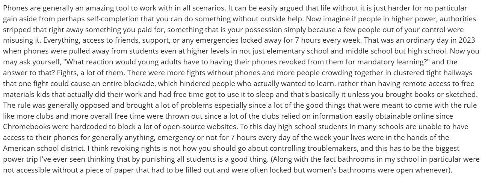
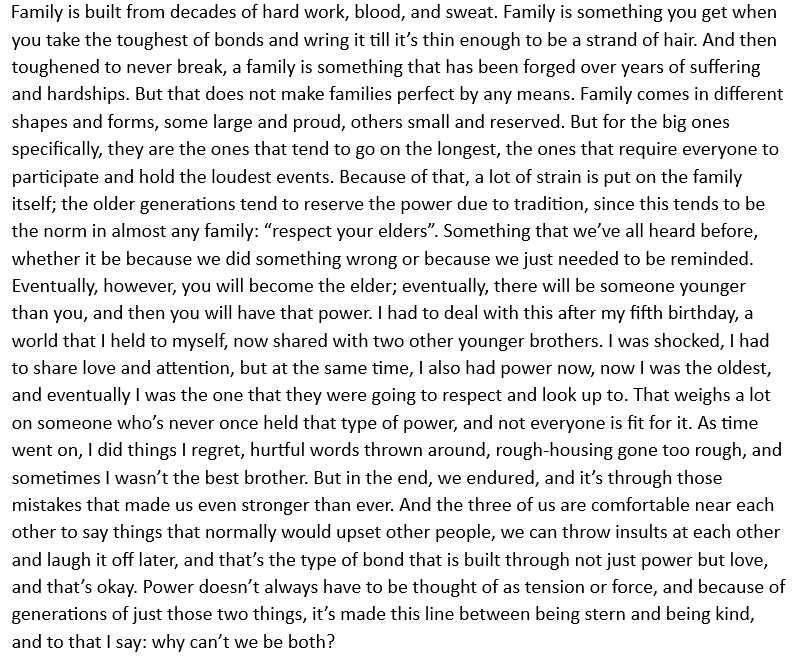
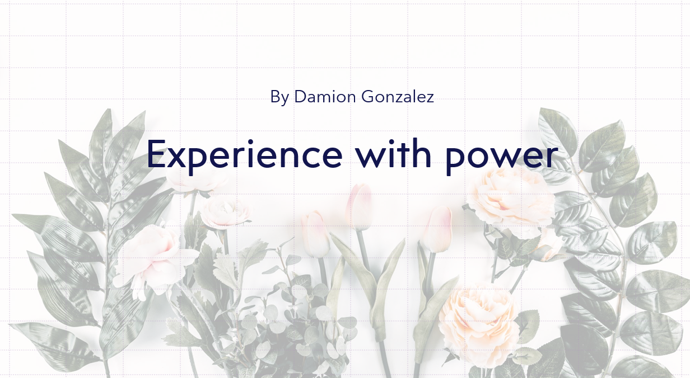
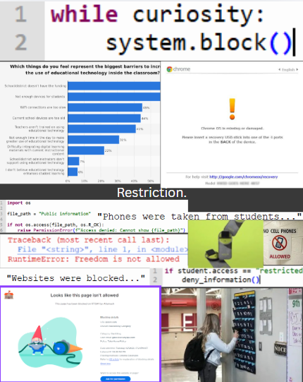

Anecdote 2, 1/28/2026, Microsoft Word, Damion's time witnessing power in an educational setting gone wrong. Made for ENGL-1007, this was my second attempt at writing an anecdote and is more refined compared to the first. However, the main issue is that it occasionally rambles. It was also created in under 30 minutes. The genre is nonfiction and memoir. It demonstrates adaptability, storytelling, and growing conciseness while presenting a clearer meaning than the first anecdote.

Anecdote 3, 2/2/2026, Microsoft Word, Damion's personal experience involving power within a family setting. Made for ENGL-1007, this is the third anecdote and the most refined of the three. It was created in about an hour, allowing more time for focus and revision. While it has minor flaws, they do not harm the story itself. The genre blends nonfiction, memoir, and autobiography. It demonstrates recollection, adaptability, storytelling, and conciseness, making it the strongest and most relatable anecdote.

Major project 1, 2/27/2026, Power Point, Damion's first major project revolving around the question of other people's experience with power. Made for ENGL-1007, this is the first project of the bunch and also uses interviews to answer the question "Is power a good, bad, or in-between concept?" It took a few weeks to complete, and for a first project has little flaws in it. The genre is nonfiction, literary journalism. It shows adaptability, storytelling, conciseness, communication, research, preparation, professionalism, editing, and revision skills. Making for an overall interesting project to answer an age-old question

Here is a collage made by Damion on 4/14/20206, on Canva. This is Damion's first collage since high school. It mixes together code made by him and some images found online. some of the credit going to: www.elevenforum.com, www.edweek.org, www.overyondr.com, support.securly.com, www.samsung.com, and brandongaille.com. The collage was made for ENLG-1007, and surrounds the idea that schools are limiting freedom for children. This was done over the course of around 2-3 weeks. The genre is nonfiction, creative freedom, and collage. It shows storytelling, research, creation, creativity, critical thinking, adaptability, digital literacy, and problem-solving skills. The project was fun and overall took quite some time and I think it went good so far.
The three artifacts I have selected for this portfolio are Anecdote 2, Anecdote 3, and Major Project 1. They are all connected through the theme of power and how individuals understand and experience it in their everyday lives. Across the artifacts presented, I try my best to explore how power operates in different contexts, whether it be through institutions, social work, or personal relationships. One thing that connects all the selected artifacts is the idea that while many systems claim authority, such as governments, schools, or even cultural traditions, power almost always traces back to material influence, particularly money and resources. When other deciding factors are stripped away, economic power almost always remains throughout history.
At the same time, my anecdotes reveal a more personal perspective on power. In Anecdote 2, for instance, I critique institutional decisions by going through how my school placed a ban on phones in school, and question how authority is forced on students. Anecdote 3, however, reflects on family traditions, specifically the phrase "respect your elders." I don't like that phrase because it makes the assumption that age automatically deserves respect, when that is not always the case. Together, these artifacts show that I value family, but also believe traditions and authority should be questioned rather than accepted blindly. Otherwise, who will ensure that authorities and traditions don't run us all blindly to do as they want forever?
Through these pieces, my writing expresses my engagement with the world around me and my willingness to express my strong perspectives on fairness, authority, and social change. Different modes of expression, like analytical writing, narrative anecdotes, and structured projects, allow me to explore these ideas in different ways, and I've only begun to scratch the surface. Looking at the artifacts together shows my growth as a writer, and thinking given that these are all in such a short time frame, I believe my ability as a writer has only just begun. Over time, I have become more comfortable connecting personal experiences with broader social ideas. This portfolio helps highlight what matters most to me as a writer. Questioning power, examining traditions, and sharing perspectives that encourage others to reflect on their own lives. Because in the end, I want to empower people one way or another.